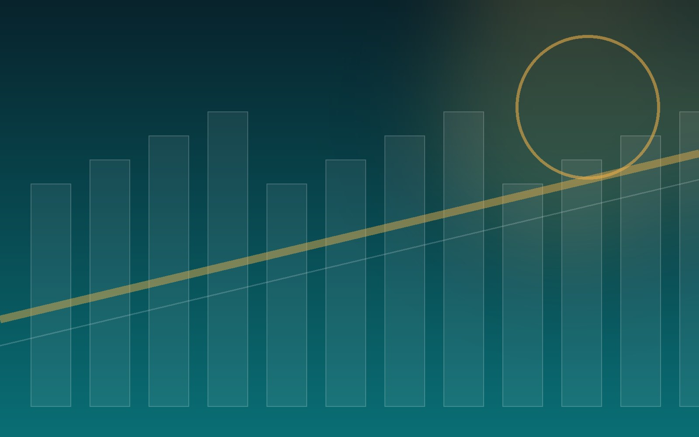
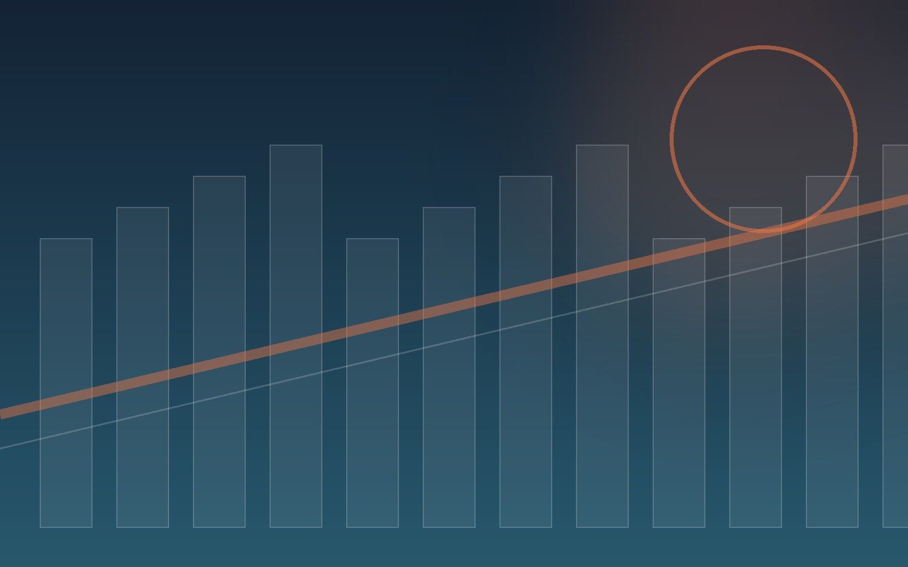

NEXHARBOR · SINCE 1948CONNECTING PORTS, MOVING THE FUTURE
Integrated port logistics since 1948
DISCOVER NEXHARBOR ↘ SCROLL
PORT · TERMINAL · TRANSPORT · 3PL
MOVE TODAY.
SHAPE TOMORROW.
오랜 현장 경험스마트 운영 기술지속 가능한 연결
WHAT WE DOBUSINESS AREA
End-to-end logistics built for every cargo

01 / 05GRAIN TERMINAL그레인터미널
축적된 운영 노하우와 디지털 시스템으로 안전하고 정확한 물류 서비스를 제공합니다.
VIEW BUSINESS ↗ 
02 / 05SOYBEAN SORTING정선사업
축적된 운영 노하우와 디지털 시스템으로 안전하고 정확한 물류 서비스를 제공합니다.
VIEW BUSINESS ↗ 
03 / 05CONTAINER TERMINAL컨테이너 터미널
축적된 운영 노하우와 디지털 시스템으로 안전하고 정확한 물류 서비스를 제공합니다.
VIEW BUSINESS ↗ 
04 / 05LOGISTICS항만 물류사업
축적된 운영 노하우와 디지털 시스템으로 안전하고 정확한 물류 서비스를 제공합니다.
VIEW BUSINESS ↗ 
05 / 053PL SOLUTION맞춤형 3PL
축적된 운영 노하우와 디지털 시스템으로 안전하고 정확한 물류 서비스를 제공합니다.
VIEW BUSINESS ↗ SUSTAINABLE HARBOR안전과 신뢰를
지속 가능한 경쟁력으로
사람과 환경을 먼저 생각하는 운영 원칙으로 항만 물류의 내일을 설계합니다.
SUSTAINABILITY ↗ 

GROW WITH USWITH NEXHARBOR
더 넓은 바다를 향해 함께 도전할 인재를 기다립니다.
CAREERS ↗